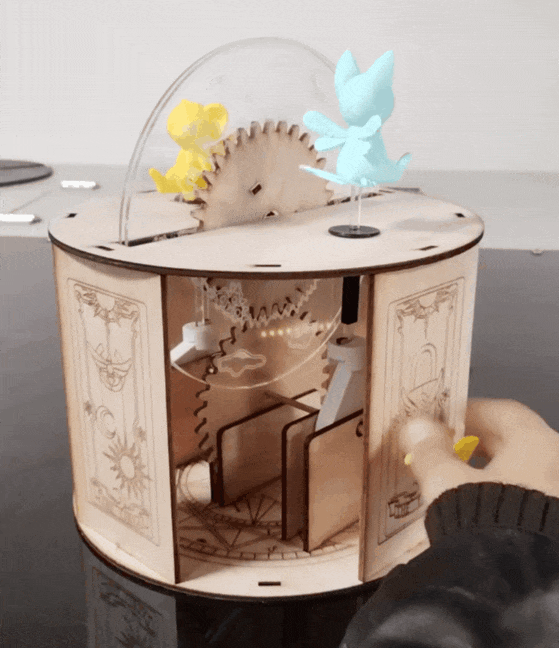
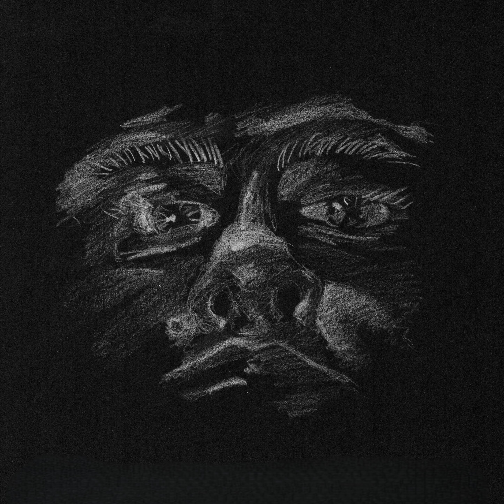

Un artefacto lúdico de mecanismo autómata, diseñado a partir de tecnologías de fabricación digital.
Se inspira en la estética y personajes de la serie animé Cardcaptor Sakura.
Conoce el proyectoTecnólogo(a) Médico(a) y estudiante de Diseño.
Coleccionista, aficionada a la música y a la cultura geek.
Desde mi perfil multidisciplinar busco instaurar el diseño como una herramienta para mejorar la salud de las personas.
Este portafolio pretende ejemplificar cómo nuestras aficiones y pasatiempos tambien constituyen parte fundamental de nuestros procesos formativos y futuro perfil profesional.
Conoce mi trabajo An. Investigación científica
La presente web presenta los scketches realizados de forma personal/grupal a lo largo de la asignatura de Imagen escrita 2026, mediante la herramienta digital de código abierto p5.js.
Cada uno se construye desde la base de los conceptos y herramientas abordados durante el curso.
Encargo 1: Pink Floyd, The Dark Side of the Moon; figuras y/o formas básicas de dibujo.
Encargo 2: Cardflip; variables, condicionales y bucles.
Encargo 3: Ritual del vacío, Púrpura; funciones de transformación, aislación y patrones complejos.
Encargo 4: Fortaleza dimensional infinita (KNJ); funciones recursivas y personalizadas.
Encargo 5: Salto al hiperespacio (Star Wars); sistema de partículas.
Encargo 6: Proyecto final U1 | Acople envolvente del momento compartido.
Imagen escrita es un curso lectivo que aborda el código como material de diseño y una forma de escritura visual, que inicia en la conceptualización y formulación para traducir las ideas en un lenguaje algorítmico que podamos percibir desde la experiencia visual e interactiva.
Introduce al arte generativo, el creative coding y el desarrollo web a través de ejercicios progresivos en JavaScript (p5.js), HTML y CSS.